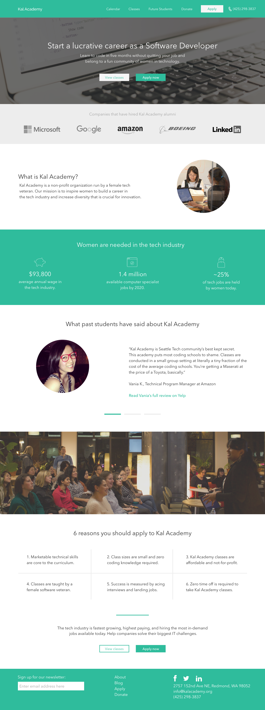
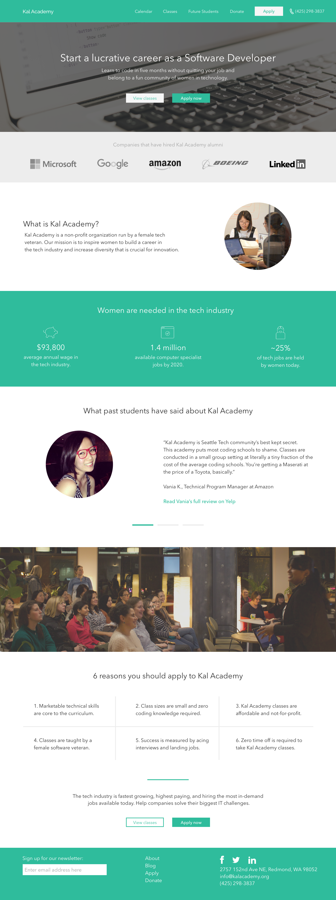

Kal Academy
Role: UX Designer, Visual Designer
Conducted competitive research and content audit as well as created sketches, wireframes, and high-fidelity comps.
I was brought onto this project by the recommendation of someone I've worked with in the past at Microsoft. Kal Academy is a non-profit organization based in Redmond that provides affordable technical education to women.
By the time I came in, the team had let go of a designer they had recruited who ultimately was not able to execute. A lot had already been done by the time I stepped in, so there was a lot of of quick investigation and discovery I had to get done, with the help of team members.
First, I went through the current site, auditing what could be improved, what was confusing, etc. With the help of my marketing partner on this project, I read through the competitive research they had already done in terms of content and strategy. Then, I went ahead and conducted my own competitive research from a more UI/UX standpoint, making note of the patterns sites such as Coding Dojo, Ada Academy, and others used.

Based on what my marketing partner had already looked into and what the stakeholder had expressed based on her experiences, a problem was defined.
Problem:
Due to the way courses are currently formatted on the site, interested students opt to call Kal (the founder, instructor and develop for the site) directly as opposed to trying to make sense of how programs and courses work through Kal Academy.
Solution:
Working with the marketing team, we would not only refine the copy across the pages to make what Kal Academy is and how it works more easy to understand, but also redesigning the site as well as different graphis and features to aid in comprehension. Success for the site would mean less calls to Kal regarding how to sign up for classes - calls would be regarding questions that the site can't answer.
With this all in mind, I worked with our stakeholder and my marketing partner on finding the best balance in copy and design without sacrificing too much on either end. Based on the copy that was provided, I dove into sketches for the different pages.
{kind=link}
This project is still in progress, to be completed by early July.
 
